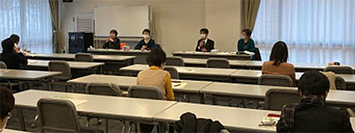

|
|
11月25日（水）10時30分より、埼玉会館ラウンジにて、第7回実行委員会を開催し、11人(11団体）、事務局2人が出席しました。  【議題】 1．実行委員長あいさつ 2．第56回埼玉県消費者大会関連 （1）開催報告…確認しました （2）大会決算状況報告（11/24時点）…確認しました。今後内部資料・チラシ印刷費、資料郵送費などを計上、そのため繰り越し金も未確定であると報告しました。 （3）ふりかえり…事前に団体から寄せられたふりかえりを共有しました。新型コロナウイルス感染防止の対策としてマイクは都度消毒すべき、ライブ配信しているため会場内での動きについて注意が必要などの意見があり、荻原博子さんの講演については大変好評でした。 （4）大会冊子・DVD送付について…DVDは、出席団体にはその場でお渡ししました。 （5）市町村における消費生活関連事業調査について…まとめ作成が遅れており、12月中旬に送付予定であることを報告しました。 3．第57回埼玉県消費者大会に向けたすすめ方について 日程と場所について、2021年11月9日（火）、全体会会場として埼玉会館小ホール、分科会会場として小ホールと会議室3室をおさえており、運営体制は副実行委員長に新たに埼玉消団連幹事団体以外の県域団体から入ってもらうことを提案し、確認されました。開催形態は実参加とオンライン参加併用を前提としています。 4．埼玉県との懇談のすすめ方 （1）懇談会次第・出席課一覧、懇談会出欠確認…すすめ方を確認しました。出席者については、実行委員会団体からは最小限とし、埼玉消団連幹事を中心にしました。 （2）要請書…確認しました 5．ご案内 （1）埼玉消費者被害をなくす会より以下、案内しました 消費者被害アンケート・めやすばこアンケート、消費者力アップ学習会Vol.2 |